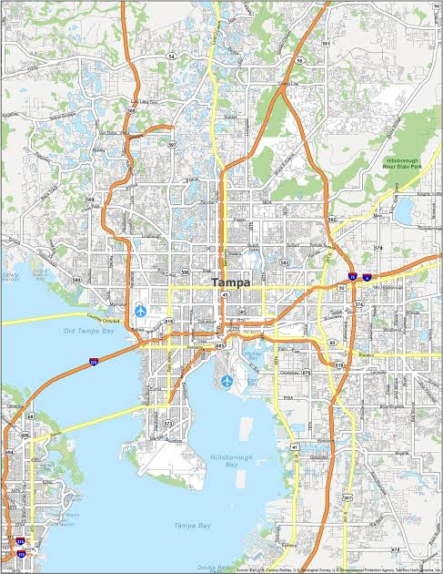

Tampa, Flordia, US
The town of Tampa was first etablished in 1849. The city of Tampa hold deep Indigenous roots with Native Amricans living there thousands of years before European contact. Tampa used to be a cigar manufcturing empire in the 1880s. Lastly, during the Spanish-American War, Tampa had served as a primary embarkation port for American troops heading to Cuba in 1898.
